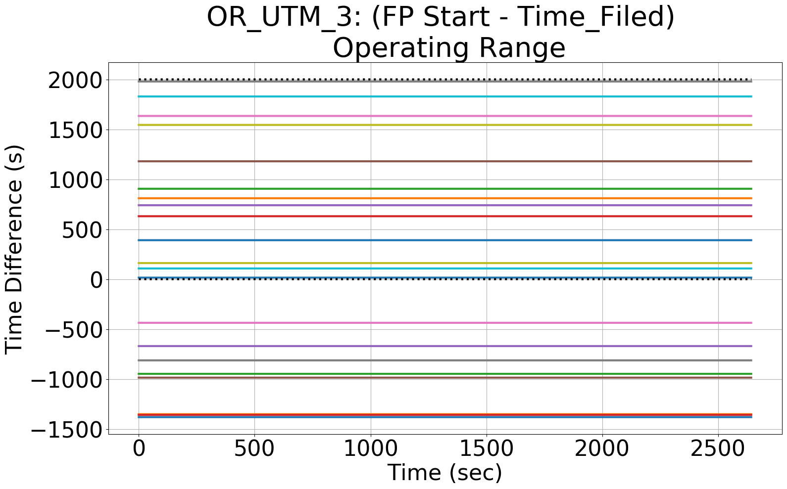

Integrating Runtime Verification into an
Automated UAS Traffic Management System
Matthew Cauwels, Abigail Hammer, Benjamin Hertz, Phillip H. Jones, Kristin Y. Rozier
This webpage contains supplementary specifications for "Integrating Runtime Verification into an
Automated UAS Traffic Management System" by M. Cauwels, A. Hammer, B. Hertz, P. H. Jones, and K. Y. Rozier
OR_UTM_3
Specification Description
The Start time of any flight plan should be greater than the Time_Filed of the flight plan
Signals Required
Start, Time_Filed
Boolean Conversion of Signals to Atomic Inputs
Start_geq_TimeFiled = 1;
for(i = 0; i < NumUAS; i++)
{
for(j = 0; j < NumWp[i]; j++)
{
// if UAS i's Start is less than its End
// and both values are not "nan"
if((Start[i] > Time_Filed[i][j]) && (Start[i] == Start[i]) && (Time_Filed[i][j] == Time_Filed[i][j]))
{
Start_geq_TimeFiled = 0;
}
}
} MLTL Specification
Original: Start_geq_TimeFiled
Fault Explanation
You cannot file a flightplan that started in the past
Additional Notes
The UTM's scenario was developed so that the actual Vapor 55's flight was 20 minutes into the 50 minute scenario. Due to practical airstrip considerations, the Vapor 55 could not sit on the runway while waiting for the simulated flights to complete. Thus, the actual time the UTM started was around 18 minutes into the 50 minute scenario. So the UTM did see, and incorrectly approve of, flight plans that had started (and mostly ended) in the past.
Figures
